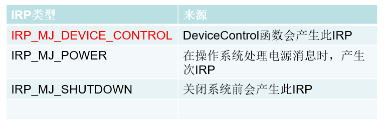

# 前言
非常规方法是 0 环 INLINE HOOK
# 正文
驱动程序原本的目的是用来控制硬件，为了控制驱动运行，我们需要在 3 环向驱动发数据，所以我们需要有一种方法来建立 0 环到 3 环的通信。
虽然驱动程序的目的是用来控制硬件的，但我们也可以用驱动做一些安全相关的事情，因为驱动运行在 0 环。
本文介绍常规方式，也就是创建设备对象的方式。
# 设备对象
- 我们在开发窗口程序的时候，消息被封装成一个结构体：MSG
- 在内核开发时，消息被封装成另外一个结构体：IRP（I/O Request Package）
- 在窗口程序中，能够接收消息的只能是窗口对象
- 在内核中，能够接收 IRP 消息的只能是设备对象
可以发现 3 环窗口程序中的 MSG 结构体和窗口对象，与 0 环的设备对象和 IRP 结构体的关系很像。
# 创建设备对象
调用 IoCreateDevice 函数创建设备对象，例如：
NTSTATUS IoCreateDevice( | |
_In_ PDRIVER_OBJECT DriverObject, | |
_In_ ULONG DeviceExtensionSize, | |
_In_opt_ PUNICODE_STRING DeviceName, | |
_In_ DEVICE_TYPE DeviceType, | |
_In_ ULONG DeviceCharacteristics, | |
_In_ BOOLEAN Exclusive, | |
PDEVICE_OBJECT *DeviceObject // 二级指针 | |
); |
参数说明
DriverObject
一个指向调用该函数的驱动程序对象。每一个驱动程序在它的 DriverEntry 过程里接收一个指向它的驱动程序对象.
WDM 功能和过滤驱动程序也在他们的 AddDevice 过程接受一个驱动程序对象的指针DeviceExtensionSize
指定驱动程序为设备扩展对象而定义的结构体的大小。DeviceName
(可选的参数) 指向一个以零结尾的包含 Unicode 字符串的缓冲区，那是这个设备的名称，该字符串必须是一个完整的设备路径名.
WDM 功能驱动程序和过滤驱动程序它们的设备对象没有名字.
注意：如果设备名未提供 (即这个参数是 NULL),IoCreateDevice 创建的设备对象将不会有一个 DACL 与之相关联
DeviceType
指定一个由一个系统定义的 FILE_DEVICE_XXX 常量，表明了这个设备的类型
(如 FILE_DEVICE_DISK,FILE_DEVICE_KEYBOARD 等), 或供应商定义的一种新型设备的类型DeviceCharacteristics
指定一个或多个系统定义的常量，连接在一起，提供有关驱动程序的设备其他信息。对于可能的设备特征信息，
见DEVICE_OBJECT结构体.Exclusive
如果指定设备是独占的，大部分驱动程序设置这个值为 FALSE, 如果是独占的话设置为 TRUE，非独占设置为 FALSE.DeviceObject
一个指向 DEVICE_OBJECT 结构体指针的指针，这是一个指针的指针，指向的指针用来接收 DEVICE_OBJECT 结构体的指针.
返回值
IoCreateDevice 函数成功时返回 STATUS_SUCCESS, 失败时返回适当的 NTSTATUS 错误代码.
这时这个函数返回值:STATUS_INSUFFICIENT_RESOURCESSTATUS_OBJECT_NAME_EXISTSSTATUS_OBJECT_NAME_COLLISION
调用要求
包含文件:wdm.h,ntddk.h
扩展
通常设备对象都把自己的名字放到 / Device 目录中。在 Windows 2000 中，设备的名称有两个用途。第一个用途，设备命名后，其它内核模式部件可以通过调用 IoGetDeviceObjectPointer 函数找到该设备，找到设备对象后，就可以向该设备的驱动程序发送 IRP。
另一个用途，允许应用程序打开命名设备的句柄，这样它们就可以向驱动程序发送 IRP。应用程序可以使用标准的 CreateFile API 打开命名设备句柄，然后用 ReadFile 、 WriteFile ，和 DeviceIoControl 向驱动程序发出请求。应用程序打开设备句柄时使用 //./ 路径前缀而不是标准的 UNC (统一命名约定) 名称，如 C:/MYFILE.CPP 或 //FRED/C-Drive/HISFILE.CPP 。在内部，I/O 管理器在执行名称搜索前自动把 //./ 转换成 /??/ 。为了把 /?? 目录中的名字与名字在其它目录 (例如，在 / Device 目录) 中的对象相连接，对象管理器实现了一种称为符号连接 (symbolic link) 的对象。IRP 就是应用程序调用驱动程序。
# 数据交互的方式
设置交互数据的方式
pDeviceObj->Flags |= DO_BUFFERED_IO;
缓冲区方式读写 (
DO_BUFFERED_IO) ：操作系统将应用程序提供缓冲区的数据复制到内核模式下的地址中。
优点：方便；缺点：效率低
适合数据量较小时使用
直接方式读写 (
DO_DIRECT_IO) ：操作系统会将用户模式下的缓冲区锁住。
然后操作系统将这段缓冲区在内核模式地址再次映射一遍。
这样，用户模式的缓冲区和内核模式的缓冲区指向的是同一区域的物理内存。
优点：效率高；缺点：单独占用物理页面，无法再进行其它操作（例如文件读写）
适合数据量较大时使用
其他方式读写（在调用 IoCreateDevice 创建设备后对 pDevObj->Flags 即不设置 DO_BUFFERED_IO 也不设置 DO_DIRECT_IO 此时就是其他方式）：在使用其他方式读写设备时，派遣函数直接读写应用程序提供的缓冲区地址。
在驱动程序中，直接操作应用程序的缓冲区地址是很危险的。
只有驱动程序与应用程序运行在相同线程上下文的情况下，才能使用这种方式
# 符号链接
特别说明:
- 设备名称的作用是给内核对象用的，如果要在 Ring3 访问，必须要有符号链接。 其实就是一个别名，没有这个别名，在 Ring3 不可见。
- 内核模式下，符号链接是以
\??\开头的，如 C 盘就是\??\C: - 而在用户模式下，则是以
\\.\开头的，如 C 盘就是\\.\C:
# IRP 与派遣函数
描述：
- 当对窗口对象传递消息时，窗口对象会根据我们所传入的消息类型执行对应的回调函数
- 当调用 CreateFile 等函数时，操作系统会将它们封装成一个结构体，此时就可以传递给设备对象，设备对象根据 IRP 的类型调用对应的派遣函数
# IRP 的类型
描述：当应用层通过 CreateFile ， ReadFile ， WriteFile ， CloseHandle 等函数对设备进行打开、读取、写入、关闭的时候，会使操作系统产生出 IRP_MJ_CREATE ， IRP_MJ_READ ， IRP_MJ_WRITE ， IRP_MJ_CLOSE 等不同的 IRP。
其它类型的 IRP

# 派遣函数
# 派遣函数注册位置
kd> dt _DRIVER_OBJECT
nt!_DRIVER_OBJECT
+0x000 Type : Int2B
+0x002 Size : Int2B
+0x004 DeviceObject : Ptr32 _DEVICE_OBJECT
+0x008 Flags : Uint4B
+0x00c DriverStart : Ptr32 Void
+0x010 DriverSize : Uint4B
....
+0x030 DriverStartIo : Ptr32 void
+0x034 DriverUnload : Ptr32 void //卸载函数
+0x038 MajorFunction : [28] Ptr32 long //派遣函数
# 注册派遣函数
NTSTATUS DriverEntry( 。。。。) | |
{ | |
// 设置卸载函数 | |
pDriverObject->DriverUnload = 卸载函数; | |
// 设置派遣函数 | |
pDriverObject->MajorFunction[IRP_MJ_CREATE] = 派遣函数1; | |
pDriverObject->MajorFunction[IRP_MJ_CLOSE] = 派遣函数2; | |
pDriverObject->MajorFunction[IRP_MJ_WRITE] = 派遣函数3; | |
pDriverObject->MajorFunction[IRP_MJ_READ] = 派遣函数4; | |
pDriverObject->MajorFunction[IRP_MJ_CLEANUP] = 派遣函数5; | |
pDriverObject->MajorFunction[IRP_MJ_SET_INFORMATION] = 派遣函数6; | |
pDriverObject->MajorFunction[IRP_MJ_DEVICE_CONTROL] = 派遣函数7; | |
pDriverObject->MajorFunction[IRP_MJ_SHUTDOWN] = 派遣函数8; | |
pDriverObject->MajorFunction[IRP_MJ_SYSTEM_CONTROL] = 派遣函数9; | |
} | |
IRP_MJ_MAXIMUM_FUNCTION 派遣函数的最大值 |
# 派遣函数的格式
// 派遣函数的格式： | |
NTSTATUS MyDispatchFunction(PDEVICE_OBJECT pDevObj, PIRP pIrp) | |
{ | |
// 处理自己的业务... | |
// 设置返回状态 | |
pIrp->IoStatus.Status = STATUS_SUCCESS; // getlasterror () 得到的就是这个值 | |
pIrp->IoStatus.Information = 0; // 返回给 3 环多少数据 没有填 0 | |
IoCompleteRequest(pIrp, IO_NO_INCREMENT); | |
return STATUS_SUCCESS; | |
} |
# 实验
# R0 代码
格式都是这样
#include <ntddk.h> | |
#define DEVICE_NAME L"\\Device\\MyDevice" | |
// Ring3 用 CreateFile 打开设备时，用 "\\\\.\\MyTestDriver" | |
#define SYMBOLICLINK_NAME L"\\??\\MyTestDriver" | |
// 0-2047 是保留的 2048~4095 | |
#define OPER1 CTL_CODE(FILE_DEVICE_UNKNOWN, 0x800, METHOD_BUFFERED, FILE_ANY_ACCESS) | |
#define OPER2 CTL_CODE(FILE_DEVICE_UNKNOWN, 0x900, METHOD_BUFFERED, FILE_ANY_ACCESS) | |
// 卸载函数 | |
VOID DriverUnload(PDRIVER_OBJECT pDriver) | |
{ | |
UNICODE_STRING SymbolicLinkName = { 0 }; | |
DbgPrint("驱动程序停止运行了 . \r\n"); | |
// 删除符号链接 删除设备 | |
RtlInitUnicodeString(&SymbolicLinkName, SYMBOLICLINK_NAME); | |
IoDeleteSymbolicLink(&SymbolicLinkName); | |
IoDeleteDevice(pDriver->DeviceObject); | |
} | |
// IRP_MJ_CREATE 处理函数 | |
NTSTATUS IrpCreateProc(PDEVICE_OBJECT pDevObj, PIRP pIrp) | |
{ | |
DbgPrint("DispatchCreate ... \n"); | |
// 返回状态如果不设置 Ring3 返回的是失败 | |
pIrp->IoStatus.Status = STATUS_SUCCESS; | |
pIrp->IoStatus.Information = 0; | |
IoCompleteRequest(pIrp, IO_NO_INCREMENT); | |
return STATUS_SUCCESS; | |
} | |
// IRP_MJ_CLOSE 处理函数 | |
NTSTATUS IrpCloseProc(PDEVICE_OBJECT pDevObj, PIRP pIrp) | |
{ | |
DbgPrint("DispatchClose ... \n"); | |
pIrp->IoStatus.Status = STATUS_SUCCESS; | |
pIrp->IoStatus.Information = 0; | |
IoCompleteRequest(pIrp, IO_NO_INCREMENT); | |
return STATUS_SUCCESS; | |
} | |
// IRP_MJ_DEVICE_CONTROL 处理函数 用来处理与 Ring3 交互 | |
NTSTATUS IrpDeviceControlProc(PDEVICE_OBJECT pDevObj, PIRP pIrp) | |
{ | |
NTSTATUS status = STATUS_INVALID_DEVICE_REQUEST; | |
PIO_STACK_LOCATION pIrpStack; | |
ULONG uIoControlCode; | |
PVOID pIoBuffer; | |
ULONG uInLength; | |
ULONG uOutLength; | |
ULONG uRead; | |
ULONG uWrite = NULL; | |
// 设置临时变量的值 | |
pIrpStack = IoGetCurrentIrpStackLocation(pIrp); | |
// 获取控制码 | |
uIoControlCode = pIrpStack->Parameters.DeviceIoControl.IoControlCode; | |
// 获取缓冲区地址 (输入和输出的缓冲区都是一个) | |
pIoBuffer = pIrp->AssociatedIrp.SystemBuffer; | |
// Ring3 发送数据的长度 | |
uInLength = pIrpStack->Parameters.DeviceIoControl.InputBufferLength; | |
// Ring0 发送数据的长度 | |
uOutLength = pIrpStack->Parameters.DeviceIoControl.OutputBufferLength; | |
switch (uIoControlCode) | |
{ | |
case OPER1: | |
{ | |
DbgPrint("IrpDeviceControlProc -> OPER1 ... \n"); | |
pIrp->IoStatus.Information = 0; | |
status = STATUS_SUCCESS; | |
break; | |
} | |
case OPER2: | |
{ | |
DbgPrint("IrpDeviceControlProc -> OPER2 接收字节数：%d \n", uInLength); | |
DbgPrint("IrpDeviceControlProc -> OPER2 输出字节数：%d \n", uOutLength); | |
// Read From Buffer | |
memcpy(&uRead, pIoBuffer, 4); | |
DbgPrint("IrpDeviceControlProc -> OPER2 ... %x \n", uRead); | |
// Write To Buffer | |
memcpy(&pIoBuffer, &uWrite, 4); | |
// Set Status | |
pIrp->IoStatus.Information = 2; | |
status = STATUS_SUCCESS; | |
break; | |
} | |
} | |
// 设置返回状态 | |
pIrp->IoStatus.Status = status; | |
IoCompleteRequest(pIrp, IO_NO_INCREMENT); | |
return status; | |
} | |
// 入口函数 相当于 Main 函数 | |
NTSTATUS DriverEntry(PDRIVER_OBJECT pDriver, PUNICODE_STRING reg_path) | |
{ | |
NTSTATUS status = 0; | |
ULONG uIndex = 0; | |
PDEVICE_OBJECT pDeviceObj = NULL; | |
UNICODE_STRING Devicename; | |
UNICODE_STRING SymbolicLinkName; | |
DbgPrint("驱动程序开始运行了 . \r\n"); | |
// 创建设备名称 | |
RtlInitUnicodeString(&Devicename, DEVICE_NAME); | |
// 创建设备 | |
status = IoCreateDevice( | |
pDriver, | |
0, | |
&Devicename, | |
FILE_DEVICE_UNKNOWN, | |
FILE_DEVICE_SECURE_OPEN, | |
FALSE, | |
&pDeviceObj | |
); | |
if (status != STATUS_SUCCESS) | |
{ | |
DbgPrint("创建设备失败! \r\n"); | |
return status; | |
} | |
// 设置交互数据的方式 | |
pDeviceObj->Flags |= DO_BUFFERED_IO; | |
// 创建符号链接名称 | |
RtlInitUnicodeString(&SymbolicLinkName, SYMBOLICLINK_NAME); | |
// 创建符号链接 | |
status = IoCreateSymbolicLink(&SymbolicLinkName, &Devicename); | |
if (status != STATUS_SUCCESS) | |
{ | |
DbgPrint("创建符号链接失败! \r\n"); | |
IoDeleteDevice(pDeviceObj); | |
return status; | |
} | |
// 设置分发函数和卸载函数 | |
pDriver->MajorFunction[IRP_MJ_CREATE] = IrpCreateProc; | |
pDriver->MajorFunction[IRP_MJ_CLOSE] = IrpCloseProc; | |
pDriver->MajorFunction[IRP_MJ_DEVICE_CONTROL] = IrpDeviceControlProc; | |
pDriver->DriverUnload = DriverUnload; | |
return STATUS_SUCCESS; | |
} |
# R3 代码
#define _CRT_SECURE_NO_WARNINGS | |
#include <stdio.h> | |
#include <windows.h> | |
#include <winioctl.h> | |
#define IN_BUFFER_MAXLENGTH 0x10 // 输入缓存最大长度 | |
#define OUT_BUFFER_MAXLENGTH 0x10 // 输出缓存最大长度 | |
#define OPER1 CTL_CODE(FILE_DEVICE_UNKNOWN, 0x800, METHOD_BUFFERED, FILE_ANY_ACCESS) | |
#define OPER2 CTL_CODE(FILE_DEVICE_UNKNOWN, 0x900, METHOD_BUFFERED, FILE_ANY_ACCESS) | |
#define SYMBOLICLINK_NAME "\\\\.\\MyTestDriver" | |
HANDLE g_hDevice; // 驱动句柄 | |
/***************************************************************************/ | |
// 打开驱动服务句柄 | |
// 打开三环链接名：\\\\.\\Driver | |
/***************************************************************************/ | |
BOOL Open(PCHAR pLinkName) | |
{ | |
TCHAR szBuffer[10] = { 0 }; | |
// 在 3 环获取驱动程序 | |
g_hDevice = CreateFile(pLinkName, GENERIC_READ | GENERIC_WRITE, 0, 0, OPEN_EXISTING, FILE_ATTRIBUTE_NORMAL, 0); | |
DWORD err = GetLastError(); | |
sprintf(szBuffer, "%d\n", err); | |
if (g_hDevice != INVALID_HANDLE_VALUE) | |
return TRUE; | |
else | |
return FALSE; | |
} | |
/***************************************************************************/ | |
// 与驱动通信的函数 | |
/***************************************************************************/ | |
BOOL IoControl(DWORD dwIoCode, PVOID InBuff, DWORD InBuffLen, PVOID OutBuff, DWORD OutBuffLen) | |
{ | |
DWORD dw; | |
// 驱动句柄 / 操作码 / 输入缓冲区地址 / 输入缓冲区长度 / 输出缓冲区地址 / 输出缓冲区长度 / 返回长度 / 指向 OVERLAPPED 此处为 NULL | |
DeviceIoControl(g_hDevice, dwIoCode, InBuff, InBuffLen, OutBuff, OutBuffLen, &dw, NULL); | |
return TRUE; | |
} | |
int main() | |
{ | |
DWORD dwInBuffer = 0x11223344; | |
TCHAR szOutBuffer[OUT_BUFFER_MAXLENGTH] = { 0 }; | |
//1. 通过符号链接，打开设备 | |
Open(SYMBOLICLINK_NAME); | |
//2. 测试通信 | |
IoControl(OPER2, &dwInBuffer, IN_BUFFER_MAXLENGTH, szOutBuffer, OUT_BUFFER_MAXLENGTH); | |
printf("%s", szOutBuffer); | |
//3. 关闭设备 | |
CloseHandle(g_hDevice); | |
getchar(); | |
return 0; | |
} |
# Reference
https://blog.csdn.net/qq_41988448/article/details/103519478
https://blog.csdn.net/Kwansy/article/details/109170129
https://www.xuebuyuan.com/838499.html
https://baike.baidu.com/item/IoCreateDevice()/3071536